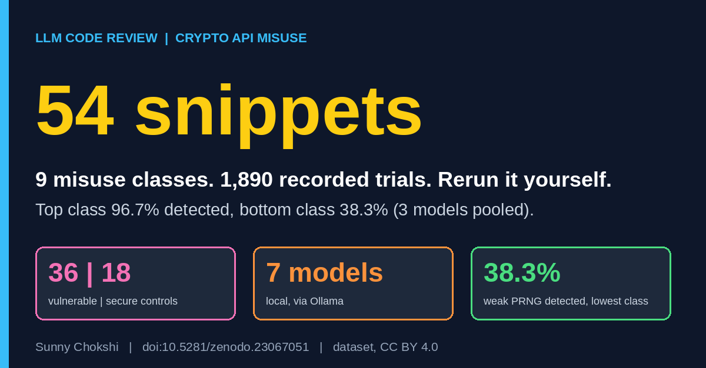

CryptoBench: 54 snippets to test LLM crypto misuse detection
Sunny Chokshi. October 30, 2026.

CryptoBench is a small dataset I built to test LLM code review of cryptographic API misuse. This post lists what is inside, what the first results looked like, and how to rerun it on your own model.
Get the dataset on ZenodoRead the paper on Zenodo
What is inside
CryptoBench holds 54 short Python snippets across nine misuse classes, each mapped to a CWE: weak password hash, ECB mode, hardcoded key or secret, static or reused IV, weak PRNG for security values, short asymmetric key, obsolete cipher, unsalted or fast KDF, and disabled certificate verification. Each class has four vulnerable snippets and two secure controls that do the same job correctly, so 36 vulnerable and 18 secure in total.
The controls are the point. A model that flags everything looks good on detection alone, and the secure snippets are what expose it. The snippets use PyCryptodome, cryptography, hashlib, requests, ssl and PyJWT. All of them are synthetic: no real keys, no exploit code, nothing that touches a live system.
The protocol
The model sees one snippet and a fixed instruction to answer VERDICT: VULNERABLE or VERDICT: SAFE, plus a one-sentence reason. Only the verdict is scored. I ran seven open models through Ollama at its default sampling settings: qwen2.5-coder at 0.5B, 1.5B, 3B, 7B and 14B, deepseek-coder 6.7B and codellama 7B. Each snippet ran five times per model, which gives 54 x 5 x 7 = 1,890 recorded trials.
What the first run showed
Four of the seven models flagged 68 to 93 percent of the secure snippets. Their detection rates mean little. Three models separate safe from unsafe code: qwen2.5-coder 7B, qwen2.5-coder 14B and deepseek-coder 6.7B.
Pooling those three, detection ranged from 96.7% for disabled certificate verification down to 38.3% for weak PRNG. The top number needs its control. The same three models flagged 86.7% of the secure certificate snippets as vulnerable, so the class shows detection without discrimination. Weak password hash is the cleaner case, with 81.7% detected and 3.3% false alarms. Even these three flag 30.0 to 42.2% of secure snippets, and obsolete cipher (91.7% detected) carries 63.3% false alarms. Weak PRNG had no false alarms and the lowest detection. Going from the 7B to the 14B qwen model raised weak PRNG from 6 to 11 of 20, a difference that is not statistically significant.
My reading is that models catch names they have seen flagged, such as verify=False, DES, MD5 and MODE_ECB, and miss an ordinary API used in the wrong place, such as random.choice for a token. I have not tested that directly.
Rerun it
You need Python 3 and a running Ollama server. No pip installs.
ollama pull qwen2.5-coder:7b
python3 crypto_bench.py --model qwen2.5-coder:7b --repeats 5
python3 scripts/analyze.py crypto_results.csvPass your own results file to the analysis script, as above, or it reads the shipped data. It writes the per-model and per-class tables with Wilson 95% intervals. The per-class table pools three fixed models, so it only reflects a rerun that includes them. The data also loads from Hugging Face as sunny-chokshi/cryptobench, and the harness is on GitHub.
Limits
Each class has four vulnerable and two secure snippets, and five repeats of one snippet are not five independent examples, so lean on the class ordering and not on a single percentage. Everything is short, synthetic Python reviewed one snippet at a time. The models are seven local models up to 14B parameters, at default sampling and with one fixed prompt. The protocol scores the verdict only, so a VULNERABLE verdict counts even if the reason names a different flaw. The paper is a preprint and is not peer reviewed.
Read and cite
CryptoBench dataset on Zenodo (doi:10.5281/zenodo.23067051) · Paper on Zenodo (doi:10.5281/zenodo.23113861)
Related: Does Indirection Hurt? and the post A hex literal made LLM code reviewers raise false alarms.
Cite as: Chokshi, S. (2026). CryptoBench: A benchmark of cryptographic API misuse for evaluating LLM code reviewers [Dataset]. Zenodo. https://doi.org/10.5281/zenodo.23067051 (all versions)
Paper: Chokshi, S. (2026). Known-Bad Names, Unknown-Bad Uses: What Local Code Models Detect When They Review Cryptographic API Misuse [Preprint]. Zenodo. https://doi.org/10.5281/zenodo.23113861
Sunny Chokshi, PhD student, Information Technology, University of the Cumberlands. Research: adversarial robustness of LLMs in cybersecurity. ORCID · GitHub